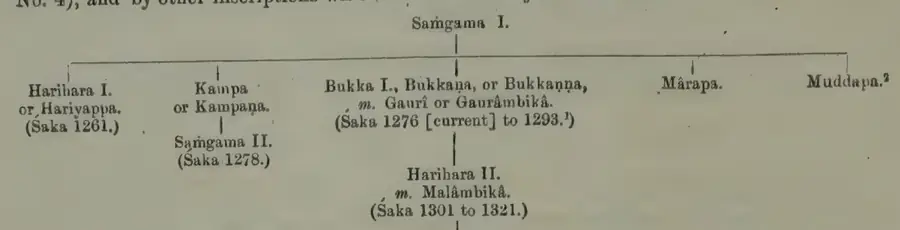
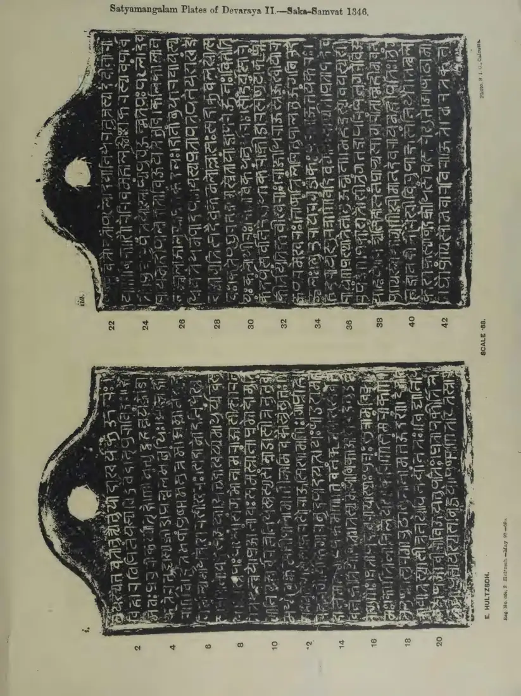

Satyamaṅgalam plates of Dêvarâya II. ; Śaka-Saṁvat 1346
No. 5.— SATYAMANGALAM PLATES OF DEVARAYA II.
SAKA-SAMVAT 1346.
BY E. HULTZSCH, PH.D.
This inscription is engraved on three copper-plates of by inches, which were “ found hidden in a paṭṭā land, belonging to one Aruṇāchala Aiyar, in the village of Satyamaṅgalam in the Vēlūr (Vellore) tālukā,” and kindly transmitted to me for examination by the Collector of the North Arcot district, Mr. H. Le Fanu, I.C.S. The ring on which the plates must have been originally strung, is missing. The inscription is in the Nandināgarī alphabet and in Sanskrit verse; a few short passages in prose occur in lines 42 f., 51 f., and at the end of the last plate.
The inscription records that king Dēvarāya II. of Vijayanagara bestowed on eight Brāhmaṇas the agrahāra of Chiteyātyūru, which he had surnamed (Dēvarāyapura) after himself (verse 25). This village was situated in Ānda-nāḍu,3 a sub-division of Marataka-nagara-prānta. The grant was made at the temple of Virūpāksha4 on the bank of the Tuṅgabhadrā river (v. 23). The date of the grant was Monday, the new-moon tithi of Āshāḍha in Śaka-Samvat 1346, the Kródhi samvatsara (v. 24). Mr. Dikshit has favoured me with the following information regarding this date:—
“ Amānta Āshāḍha krishna amdāvsyā of Śaka-Samvat 1346 expired, the Kródhi samvatsara, ended on Tuesday, the 25th July, A.D. 1424, commencing on Monday, the 24th July, as late as 56 gh. 13 p. Ujjain mean-time. This is not the tithi in question, as the original has a Monday. Besides, Āshāḍha was intercalary in this year, and its amdāvsyā ended on Monday, the 26th June, A.D. 1424, at 31 gh. 56 p. Ujjain mean-time. This seems to be the tithi in question, though the word adhika, “ intercalary,” is not added in the original. There was a solar eclipse on this date (26th June), though I have not ascertained whether it was visible in India or not.”
The historically important part of the inscription is the genealogy of the first dynasty of Vijayanagara, which is given in verses 3 to 21. As in other inscriptions,5 Yadu of the race of the Moon is mentioned as the mythical ancestor of this dynasty. The first historical person is Saṅgama [I.] (v. 5). One of his sons was Bukka [I.] (v. 6), whose descendants are named in the same order as in a previously published inscription of Dēvarāya II.6 Besides, the new inscription mentions the names of the queens of Bukka I. and of his three direct descendants, and
1 The word manu appears to be used here in its Tantric sense, vis. in that of mantra.
2 The word “ fortune ” is repeated five times in the original.
3 Other forms of this name are Āndi-nāḍu and Āṇja-nāḍu. To Āndi-nāḍu belonged the village of Vēppambaṭtu (in the Vēlūr tālukā); South-Indian Inscriptions, Vol. I. pp. 80 and 131. A sub-division of Āṇja-nāḍu was the simā of Guḍiyātan (now the head-quarters of a tālukā); Ind. Ant. Vol. XIII. p. 132, verse 54.
4 This is the Pampāpati temple at Hampe; Ep. Ind. Vol. I. p. 363.
5 Colebrooke's Miscellaneous Essays, Madras edition, Vol. II. p. 256; Journal, Bombay Branch; R. A. S., Vol. XII. p. 372; Madras Journal of Literature and Science for 1881, p. 253; South-Indian Inscriptions, Vol. I. pp. 156 and 160.
6 ibid. p. 160 f.
Bukka II.
(Šaka 1328.?)
Dêvarâya I.
m. Hêmâmbikâ.
(Šaka 1330 [current]4 to 1334.)
Râjašekhara.
(Šaka 1401 and 1408.)
Děvarâya II.
(Šaka 1346 to 1371.)
Vîra-Vijaya,
m. Nârâyanâmbikâ.
(Šaka 1[33]55 and 1338.6)
Virūpâksha II.
(Šaka 1405.9)
Mallikârjuna.8
(Šaka 1375 and 1387.)
Pratâpa-Dêvarâya.7
1 In previous tables (Journal, Bombay Branch, R. A. S., Vol. XII. p. 339, and South-Indian Inscriptions, Vol. I. p. 161), Šaka-Samvat 1290 [expired], the Kilaka year, was entered as the latest known date of Bukka II. Mr. Cousens has since furnished me with impressions of two subsequent inscriptions in the Kanarese language at Bhatkal, viz. a copper-plate of Vira-Bukkarâya, dated in Šaka-Samvat 1291 [expired], the Saumya year, and a stone inscription of Vira-Bukkanṇa-Odeyar of Vijayânagara (thus), dated in Šaka-Samvat 1293 [expired], the Virôdhikrît year.
introduces a younger brother of Dêvarâya II., whose name was Pratâpa-Dêvarâya, and who, to judge from verse 21, appears to have held a high office, perhaps that of co-regent, under his royal brother. I subjoin a pedigree of the first Vijayanagara dynasty, in which I have entered the new details supplied by the present inscription, by an inscription of Saṅgama II. (ante, No. 4), and by other inscriptions which have been lately discovered:—
Vîrûpâksha I.
(Šaka 1392.)
2 This Kanarese name was read by Colebrooke (Miscellaneous Essays, Madras edition, Vol. II. p. 257) as Mudgapa ('the protector of beans'), in which form it has found its way into Böhtlingk and Roth's Sanskrit-Wörterbuch, and from it into Sir Monier Williams' Sanskrit Dictionary.

3 South-Indian Inscriptions, Vol. I. No. 55. That this inscription has to be attributed to Bukka II. was first recognised by Mr. Venkayya; Madras Christian College Magazine for March 1892. Another Tamil inscription of Bukka II., dated in Šaka-Samvat 1328, expired, the Vyaya year, is engraved on the east wall of the Naṭarâja shrine in the Êkâmranâtha temple at Kâñchi.
4 Šaka-Samvat 1330, the Sarvajit year, is the date of a Kanarese inscription of Dêvarâya at Bhatkal, impressions of which I owe to the kindness of Mr. Cousens.
5 See Mr. Venkayya's article, loc. cit.
6 This is the date of the Vandavâśi plates, which were published by Dr. Oppert in the Madras Journal of Literature and Science for 1881, pp. 249 ff. The inscription records the grant of the village of Cheṭṭupêdu in the kingdom (râjya) of Paṭabîdu. This is the modern Paṭavêdu in the Pôlûr tâlukâ of the North Arcot district; see South-Indian Inscriptions, Vol. I. p. 83.
7 This name is taken from verse 21 of the present inscription.
8 On this and the two next kings see Ind. Ant. Vol. XXI. p. 321 f. and Madras Christian College Magazine, loc. cit.
9 See my Annual Report for 1891-92, p. 9.
TEXT.1
First Plate.
- 1 भूयस्यै भवतां भूत्य भूयादाश्चर्यकुंजरः ।
- 2 विहारविपिनं यस्य विदुर्वेदान् पुराविदः ॥ [१*] क्षे-
- 3 मं वः प्रचुरीकुर्यात् क्षीणीमभ्युद्वहन्नयं [1*] क्रोडा-
- 4 कृतेरभूद्यस्य क्रीडापल्ललमंबुधिः । [२*]2 अस्ति क्षी-
- 5 रार्णवोद्भूतमपां पुष्पमनुत्तमं । अम्लानं यद-
- 6 निर्माल्यमाधत्ते शिरसीश्वरः । [३*] सदामोदनिधेस्त-
- 7 स्य संतानो यदुसंज्ञेया । अभूदाश्चर्यमाधुर्यं वसु-
- 8 धायास्तपःफलं । [४*] संगमो नाम राजासीत्सारभू-
- 9 ते तदन्वये । प्रजानां यः समस्तानां प्रमोदो मूर्ति-
- 10 मानिव [॥ ५*] सर्वरत्ननिधेस्तस्य संम्राडासीत्तनूभुवां [1]
- 11 मध्ये बुद्धमहीपाली मणीनामिव कौस्तु(स्तु)भः । [६*]
- 12 अहीनभोगसंसक्तिरसौ राजसिखामणिः3 । गोप्ता ह-
- 13 रिहरं गौर्यां कुमारमुदपादयत् । [७*] यः षोडशमहा-
- 14 दानमहामंटपकर्मणा4 । भवनं कृतवान् सर्वं भु-
- 15 वनं कीर्तियोषितः । [८*] तस्य मलांबिकाजाने[रु]दभूदुन्न-
- 16 तो गुणैः । प्रतापदेवरायाख्यः पुत्रः सुत्रामविक्र-
- 17 मः । [९*] कर्णतालानिलैर्यस्य करिणां समरांकणे5 ।
- 18 तुलुष्कास्तुरगारूढास्तूलानामभजं6 दशां । [१०*] देमां[बि]-
- 19 कायां तस्यासीत्तनयो विनयोंनतः । विद्यानिधि-
- 20 विंसेषज्ञी7 वीरो विजयभूपतिः । [११*] प्रतापकीर्तिल-
- 21 तयो[:*] प्रभोर्यस्य समिद्धयो[:*] । पुष्पाणि 8तटितस्तार[तः*]
1 From the original copper-plates and ink-impressions of them.
2 Verses 2 to 6, 8 and 11 resemble verses 2 to 4, 5a and 9b, 6, 8 and 11 of an inscription of Vira-Vijaya (Madras Journal of Literature and Science for 1881, p. 249 f.). Verse 7 is nearly identical with verse 17 of an inscription of Harihara II. (Colebrooke's Miscellaneous Essays, Madras edition, Vol. II. p. 264), and verse 14b with verse 19b of the same inscription.
3 Read शिखा.
4 सण्टप is the Kanarese form of the Sanskrit मण्डप.
5 Read समराङ्गणे.
6 Read भजन्.
7 Read हेमान्वि, as in the inscription of Vira-Vijaya, Madras Journal of Literature and Science for 1881, p. 250, verse 11.
8 Read विंशेषज्ञी.
9 तटित् is the Kanarese form of the Sanskrit तडित्.
Second Plate; First Side.
22 पुष्पवंतौ च तौ फले । [१२*] दयानिधेरभूत्तस्य देवी नारा-
23 यणांबिका । शौरेरिव महालक्ष्मीः शंकरस्येव पार्व-
24 ती । [१३*] पुत्ररूपं तयोः श्लाघं पूर्वजन्मतपःफलं । देव-
25 रायमहीपालो दाता विजयते भुवि । [१४*] कलिकालान-
26 लज्वालाजालग्लपितकदक्कः । दानांबुधारया यस्य
27 भ्रियते धर्मपादपः । [१५*] यस्य प्रतापतपने यशश्वद्रे
28 च जाग्रति [।*] सदैव कम् जोल्लासः सदा कुवलयोत्म-
29 वः । [१६*] कृते पृथुरभूद्रामस्त्रेतीयां द्वापरेर्जुनः । विभाति
30 यः कलौ धीरः क्षितावेकधनुर्धरः । [१७*] सौदर्यसारे
31 कंदर्पं सर्वानंदे सुधाकरं । क्रीडारसेषु यं कृष्णं
32 कीर्तयंति कवीश्वराः । [१८*] राजाधिराजस्तेजश्वी' यो रा-
33 जपरमेश्वरः । भाषातिलंघिभूपालभुजंगबिरुदो-
34 ज्वलः2 । [१९*] मूररायरगंडांकः परराजभयंकरः ।
35 हिंदुरायसुरत्राणो वंदिवर्गेण वर्ण्यते । [२०*] प्रतापदेव-
36 रायेण प्रख्यातेनानुजन्मना । म[हें]द्रस्येव यस्य श्री-
37 रूपेंद्रेण प्रकाशते । [२१*] श्रीतुंगभद्रापरिवे' नगरे विज-
38 याह्वये । पित्रं सिंहासनं प्राप्य 'सागरांतान्महीमवन् [।] [२२*]
39 पुण्यश्लोकाग्रणीः श्रीमान् देवरायमहीपतिः । तुंग-
40 भद्रानदीतीरे श्रीविरूपाक्षसंनिधौ । [२३*] तत्वलो-
41 के शकस्याद्दे क्रोधिसंवत्सरे शुभे । आषाढामा-
42 तिथौ पुण्ये सोमवारविराजिते । [२४*] मरतकन-
Second Plate; Second Side.
43 गरप्रांते । आंदनाडाह्वये देश5 चिटेयाङ्मू-
44 रुसंज्ञकं । यामंतं6 नामधेयेण7 कृत्वालं-
45 कृतमात्मनः । [२५*] निर्धिनिक्षेपवार्यश्मसिद्ध-
46 साध्यादिसंयुतं । अखंडं सीमभि(ः)र्जुष्टं निरु-
47 पाधिकमंचितं । [२६*] आचंद्रतारकं धारापूर्व-
48 कं [द*]क्षिणान्वितं । अग्रहारममुं प्रादाङ्गसुरेभ्यः
Plate 1 is bound after this page.
49 प्रतापवान् । [२७*] दत्तोयमग्रजन्मभ्यो देवरायम-
50 हीभुजा । आचंद्रतारकं भूमावग्रहारः
51 समेधतां ॥ [२८*] अस्य वृत्तिभाजोग्रजन्मा-
52 नः कथ्यंते ॥ भारद्वाजकुलोत्तंसः क-
53 ष्णदेवस्य नंदनः । १रुक्शाखापारगः
54 श्रीमान् शिंगपार्यो गुणोन्नतः । [२९*] प्रान्नो नर-
55 हरि[*] श्रीमान्नागपो विठ्ठपः२ सुधीः । संकण्णार्यो
56 नरप[ति*]सूरिवंस्त्रभकोविदः । [३०*] शिंगपार्यस्य तन-
57 याः सहजा विनयोन्नताः । भारद्वाजो नरहरिविं-
58 रूपाक्षस्य नंदनः । [३१*] ३रुक्शाखापारदृश्वानो भारद्वा-
59 जकुलोद्दहाः । एकैकवृत्तिभाजोस्मिन्निलंमष्टो४
60 द्विजोत्तमाः । [३२*] अष्टावस्याग्रहारस्य वृत्तयः परिकल्पि-
61 ताः । प्राच्या[दि*]दिक्षु सीमानः कथ्यंते ६दशभाषया ॥ [३३*]
Third Plate.
62 आभिः सीमाभिरासं हरिहयमहिमा दत्तवानग्र-
63 हारं (I) विप्रेभ्यो वेदविज्ञगो विमलतरयया९ देवराय-
64 क्षितींद्रः । आ लोकालोकशैलादखिलधरणिभृन्म-
65 स्तकंन्यस्तपादः (I) प्रीत्या पृथ्वीं समस्तामवतु चिर-
66 मिमां दिक्षु दीव्य[त्*]प्रतापः ॥ [३४*] एकैव भगिनी लोके
67 सर्वेषामेव भूभुजां । न भोज्या न करग्रांहा७ विप्रद-
68 त्ता वसुंधरा ॥ दानपालनयोर्मध्ये दानाच्छेयोतु-
69 पालनं । दानात्पूर्गमवाप्नोति पालनादच्युदं९ पदं ॥
70 स्वदत्तां परदत्तां वा यो हरेत वसुंधरा[म्*] । षष्टिर्व-९
71 षंसहस्राणि विष्ठायां जायते क्रिमिः ॥ सामान्यो-
72 यं धर्मसेतुर्नृपाणां काले काले पालनीयो भव-
73 द्विः । सर्वानेतान् भाविनः पार्थिवेंद्रान् भू-
74 यो भूयो याचते रामचंद्रः ॥ श्री श्री श्री श्री श्री ॥
75 श्रीविरूपाक्ष10 [॥*]
ABSTRACT OF CONTENTS.
Having invoked Gaṇapati (verse 1) and the Boar-incarnation of Vishṇu (v. 2), the author gives the following genealogy of the first Vijayanagara dynasty:—
The moon (v. 3).
His descendant, Yadu (v. 4).
His descendant, Saṅgama [I.] (v. 5).
One of his sons, Bukka [I.] (v. 6).
His son by Gaurí, Harihara [II.] (v. 7).
(Verse 8.) “By erecting spacious halls (for the performance) of the sixteen great gifts,1 he made the whole world (bhuvana) the dwelling (bhavana) of (his) wife, — (the goddess of) Fame.”
His son by Malâmbikâ, Pratâpa-Dêvarâya [I.] (v. 9).
(V. 10.) “Through the wind (which was produced) by the flapping of the ears of his elephants on the field of battle, the Tulushka (i.e. Musalmân) horsemen experienced the fate of cotton (i.e. were blown away).”
His son by Hêmâmbikâ, Vira-Vijaya (v. 11).
(V. 12.) “The lightning (and) the stars (were) the flowers, and the sun and the moon (were) the fruits, of two burning creepers, (viz.) the valour and fame of this lord.”2
His son by Nârâyapâmbikâ (v. 13), Dêvarâya [II.] (v. 14).
He bore the surnames (biruda) Râjâdhirâja, Râjaparamêvara, ‘the disgracer of kings who break their word,’3 ‘the disgracer of the three kings (of the South),’ ‘the terrifier of hostile kings,’ and ‘the Sulṭân (Suratrâna) among Hindû kings’ (vv. 19 and 20).
(V. 21.) “(His) glory is made resplendent by his renowned younger brother Pratâpa-Dêvarâya, just as that of Mahêndra by his younger brother Upêndra (Vishṇu).
(V. 22.) “Having ascended the throne of (his) father in the city (nagara) called Vijaya, whose moat is the holy Tuṅgabhadrâ, (and) protecting the earth up to the oceans,—
(V. 23.) “The foremost among the virtuous, the glorious king Dêvarâya [II.] (made the following gift) in the presence of (the god) Śrī-Virûpâksha, on the bank of the Tuṅgabhadrâ river,—
(V. 24.) “In the year of the Śaka (king), (which is expressed by the chronogram) tattvalôka (i.e. 1346),4 in the auspicious Krôdhi saṅvatsara, on the pure new-moon tithi of Āshâdha, which was distinguished (through being) a Monday.
(V. 25.) “Having adorned by his own name (i.e. having surnamed after himself) the village called Chiteyâtyûru in the country called Ânda-nâdu, (a subdivision) of Marataka-nagara-prânta,5—
1 See Ep. Ind. Vol. I. p. 368, note 58.
2 The only remarkable point in this verse is the occurrence of the rare dual pushpavantau, ‘the sun and the moon.’ According to Sanderson’s Dictionary, the same word is used in Kanarese in the form pushpavantaru.
3 Bhâshâtilaṅghi-bhûpâla-bhujaṅga is a translation of the Kanarese term bhâshege tappuva râyara ganda. On this and on the next biruda see Ep. Ind. Vol. I. p. 363, and p. 369, notes 61 and 62. A similar obscene term is râya-râdhutta-miṇda, ‘the disgracer of the troopers of (hostile) kings;’ Ind. Ant. Vol. XIII. p. 131, Plate iii b, text line 19.
4 On this mode of expressing numbers see Ind. Ant. Vol. IV. p. 207; and Dr. Burnell’s South-Indian Palaeography, second edition, p. 79.
5 Maratakanagara is a vulgar form of Marakatanagara, ‘the city of emeralds.’— Bate’s Hindee Dictionary and Platts’ Hindûstânt Dictionary give both मरकत (markat) and मरतक (martak). The form मरतक for मरकत occurs also in the Raṅganâtha inscription of Sundara-Pândya; ante, p. 12, text line 3.
(V. 26.) “Endowed with buried treasures, deposits, water, stones, actuals, outstandings, etc.,1 undivided, up to (its) boundaries, unencumbered, beautiful (!),—
(V. 27.) “For as long as the moon and the stars shall endure, with libations of water, accompanied by presents (dakshiṇā), the powerful (king) gave this agrahāra to Brāhmaṇas.
(V. 28.) “Let this agrahāra, which was given to Brāhmaṇas by king Dēvarāya [II.]. prosper on earth as long as the moon and the stars shall endure!
(Line 51.) “The Brāhmaṇas who received shares (vritti) of this (village), are specified (as follows):—” (1.) Krishṇadēva’s son Śingapārya (verse 29); (2. to 7.) Narahari, Nāgapa, Vitthapa, Sankaṇārya, Narapa[ti] and Vallabha (v. 30), sons of (1.) Śingapārya; and (8.) Virūpāksha’s son Narahari (v. 31).
(V. 32.) “Each of (these) eight Brāhmaṇas, who had thoroughly studied the Rik-śākhā and were descended from the race of the Bhāradvājas, received for ever one share (vritti) of this (village).
(V. 33.) “The eight shares of this agrahāra were (thus) settled. (Its) boundaries in the eastern and other directions are specified in the language of the country (i.e. in Tamil).”2
In verse 34 the composer wishes a long reign to the donor, king Dēvarāya [II.]. Then follow four of the usual imprecatory verses, a five-fold repetition of the auspicious monosyllable śrī, and the name of the god Śri-Virūpāksha in Kanarese characters.3
1 See Ep. Ind. Vol. I. p. 402, note 41.
2 The promised specification of the boundaries is omitted in the document itself, as in an inscription of Harihara II.; Colebrooke's Miscellaneous Essays, Madras edition, Vol. II. p. 261.
3 From No. 4, verse 42, it appears that the word Srī-Virūpdksha was affixed to the charter by the king himself, instead of his signature.
